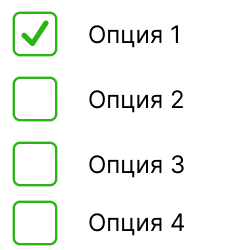

<div class="container">
  <mat-button-toggle-group value="choose_mult_options" [(ngModel)]="selectedValue">
    <div class="chooseQuestionType">
    <mat-button-toggle value="choose_mult_options" class="custom-toggle">
      
    </mat-button-toggle>
      <span>Вопрос с выбором множества ответов</span>
    </div>
    <div class="chooseQuestionType">
    <mat-button-toggle value="choose_option" class="custom-toggle">
      
    </mat-button-toggle>
      <span>Вопрос с выбором одного ответа</span>
    </div>
    <div class="chooseQuestionType">
    <mat-button-toggle value="input_text" class="custom-toggle">
      
    </mat-button-toggle>
        <span>Вопрос с вводом ответа</span>
      </div>
  </mat-button-toggle-group>
  <div class="action">
    <button mat-raised-button (click)="onChooseClick()" color="primary">Выбрать</button>
  </div>
</div>
